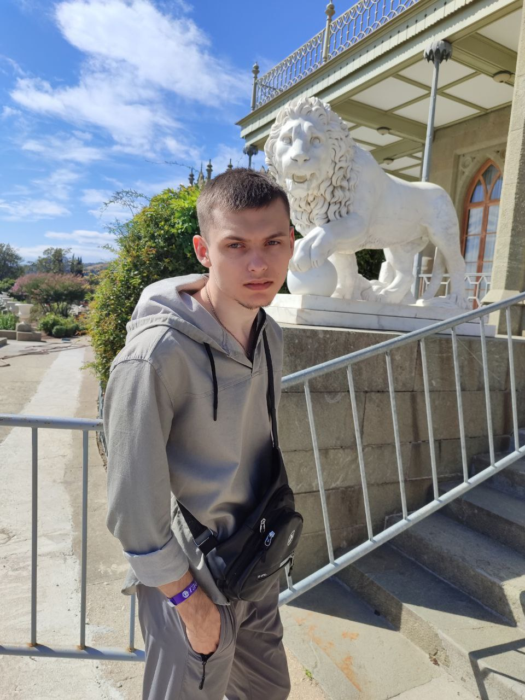

⧫ Основная информация:
Я, Тащилин Данил Евгеньевич, являюсь квалифицированным специалистом в области информационных технологий, выпускник ГБПОУ «ДТПА» по специальности 09.02.07, продолжаю расширять свои знания, умения и навыки в указанной сфере, обучаясь в Донецком филиале "РАНХиГС". В сфере ИТ позиционирую себя как реализатор, способный воплотить любую схему или фантазию в сети. В отличие от ИИ, который покушается на мою профессию, я могу создавать оптимизированные, автоматизированные, и интуитивно понятные решения, которых ИИ точно не сможет достичь.